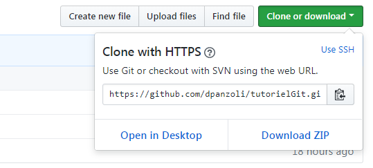
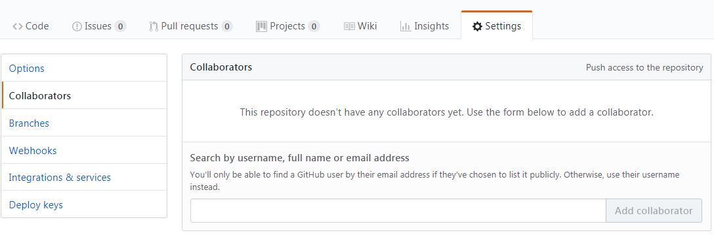

Through this tutorial, two users learn the basics of versionning a project using git.
Getting started
Before we start, please name two users.
Two users must be identified in order to proceed with the tutorial...
{{userA}} and {{userB}} are collaborating on a project.
Set-up
The first step consists in {{userA}} and {{userB}} signing up to an account on GitHub at the following address https://github.com
Then, {{userA}} creates a new Java project on Eclipse and imports the sources that can be downloaded here:tuto_git.zip
{{userA}} checks that the project compiles and runs successfully.
Creating a repository and push on GitHub
Using a terminal, {{userA}} navigates to the project directory and initialises a new git local repository.
git init
A message in the terminal confirms that an empty git repository has been initialised in the current directory.
The next step consists in telling git which file(s) should be excluded from versionning. To that end, {{userA}} creates a new text file .gitignore.
touch .gitignore
{{userA}} edits the file with a text editor and adds the following patterns (compiled bytecode and personnal Eclipse parameters).
/bin/
/.settings/
{{userA}} saves and quits.
{{userA}} adds all the files/directories to be tracked to the repository index.
git add -A
{{userA}} checks that all the project files were successfully added to the index, except those ignored. In the git terminolgy, these files are now staged.
git status
{{userA}} commits these changes within a first revision.
git commit -m "Project's first commit"
The revision is acknowledged by git, and receives a hash (the equivalent of a revision number). This revision is now the head of the local repository.
{{userA}} checks again the status of the local repository.
git status
For now, there are no differences between the working copy and the head revision. In the git terminology, the working copy is clean.
Since it has now a head revision, the local repository may be synced to a remote repository.
The first step is to create a new repository online on GitHub.
On GitHub, {{userA}} registers a new project, for instance uding the name tutorielGit and copy its address.

{{userA}} adds the remote repository to the local repository.
{{UserA}} pushes the revision onto the remote repository.
git push origin master
The terminal displays a confirmation that the revision was successfully pushed online. On GitHub, in the project tutorielGit, the revisions is now listed along with the identity of the user who pushed it.
Adding collaborators
{{userA}} registers {{userB}} as a collaborator of the project on GitHub.

{{userB}} navigates to its Eclipse workspace directory and clones the project from GitHub
Once cloned, the project can be imported from Eclipse using the menu
FileImport...GeneralExisting projects into workspace
{{userB}} checks that the project compiles and runs.
Congratulations {{userA}} and {{userB}} !
You've reached a first step of collaboration: you've learned how to share a project.
Simple workflow (SVN-type)
In Eclipse, {{userB}} adds to the project a functionality to quit the application on clicking on the icon of the window.
{{userB}} stages this modification in the local repository index.
git add src/tuto_git/Application.java
{{userB}} commits this modification in a new revision.
git commit -m "App now exiting on closing window."
Finally, {{userB}} syncs this new revision with the remote repository.
git push origin master
Meanwhile, {{userA}} checks for any new revision on the remote repository.
git fetch
{{userA}} is informed that the project has progressed and the local revision is behind the revision on GitHub. {{userA}} pulls the head revision onto the local repository.
git pull origin master
Git informs {{userA}} that the project locally can be updated fast-forwardly. That means there is a straight path of modifications from the local revision to the new head on GitHub.
The new revision is downloaded and replaces the former head. {{userA}} and {{userB}} are now on sync.
Congratulations {{userA}} and {{userB}} !
You have now reached a second step of collaboration: you've learned how to collaborate in a project following a synchronous progression. But git has a lot more to offer! Let's carry on the training.
Local recovery of one or several files
In Eclipse, {{userA}} changes one or several lines in the Application class so as to make the code invalid.
{{userA}} checks the differences between the working copy and head revision.
git diff
{{userA}} restores the modified file from the local repository.
git checkout src/tuto_git/Application
In Eclipse, {{userA}} checks the code has been reverted to its former version.
Collaborative work without conflicts
{{userA}} introduces a new change in the project by adding into the class Application the following instruction setLocationRelativeTo(null) that allows to center the application window relative to the screen.
Meanwhile, {{userB}} also introduces another change on the project by modifying the size of the button in the class Vue to 120*120 pixels.
{{userA}} and {{userB}} both commit their changes.
{{userA}}:
git add src/tuto_git/Application.java
git commit -m "ajout du centrage de la fenêtre"
{{userB}}:
git add src/tuto_git/Vue.java
git commit -m "modification de la taille du bouton"
First, {{userA}} pushes his/her revision on GitHub.
git push origin master
Then, {{userB}} pushes his/her revision on GitHub.
git push origin master
The revision is rejected by the remote repository!
{{userA}} and {{userB}} have moved the project forward individually. The project has therefore diverged: each user is actually working now on a separate branch. These diverging branches need to be merged.
{{userB}} pulls the last revision from the remote repository.
git pull origin master
Once the remote head revision on GitHub is downloaded, the local and remote revisions are merged seamlessly, since no conflict has been detected. Indeed, the project was modified by the users on different locations in the code.
{{userB}} now detains the most foward revision since it includes the changes of {{userA}}. This revision must be pushed onto the remote repository.
git push origin master
{{userA}} must remember he/she is now behind the head revision of the project and therefore he/she will need to pull from the remote repository.
Congratulations {{userA}} and {{userB}} !
you've reached a third step of collaboration. Branching the project to develop separate features in parallel is something that is hardly avoidable in a project. You've learned how to cope with a simple merge, where changes are not colliding with one another.
Conflict resolution
{{userA}} and {{userB}} make modifications in parallel to the class Application by setting the window title to a different value using the method setTitle.
{{userA}} and {{userB}} both commit their changes locally.
git add src/tuto_git/Application.java
git commit -m "The app window now has a title"
Then, {{userA}} pushes his/her revision on GitHub.
git push origin master
The revision is rejected by the remote repository!
As before, the project has diverged into two separate branches which must now be merged.
{{userA}} pulls the latest revision from the remote repository.
git pull origin master
A conflict is detected !
Unlike in the previous step, the modifications are colocated and therefore git is unable to merge the branches automatically and will rely on the user to do so. The conflict(s) is/are pointed out by git inside the conflicting files.
{{userA}} finds out more about the conflict(s) and identifies the files where an action is required.
git diff
In Eclipse, {{userA}} solves the conflict(s) by manually and directly modifying the code and cleaning the conflict marker(s).
Then, {{userA}} is allowed to commit this new revision and push it onto the remote repository.
git add src/tuto_git/Application.java
git commit -m "Conflict about the windows title has been solved"
git push origin master
{{userA}} checks on GitHub that the head revision is now his/her revision.
{{userB}} pulls the head revision (which includes the resolution of the conflict) from the remote repository.
git pull origin master
Congratulations {{userA}} and {{userB}} !
You've reached an important milestone in this training: You've learned how to solve a conflict without panicking!
you have completed this tutorial!
You have successfully completed this tutorial and you've upgraded to the rank of badger.
Congratulations!
The git badger is apt for productive collaboration with git. However, remeber git is a complex tool and many years of experience will be required before mastering every one of its features and subtleties!